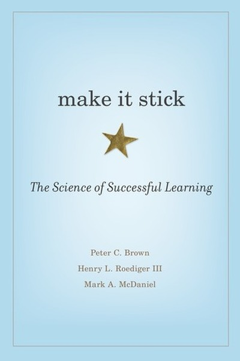

Library › Productivity
Make It Stick — Summary & Key Lessons

The science of successful learning — why most studying is wasted effort and what actually works.
📖 OPEN THE FULL INTERACTIVE BREAKDOWN →🌐 Read it in Hindi, Hinglish, Gujarati, Tamil & 22 more languages — free, with audio.
💡 The Big Idea
The most popular study habits — re-reading, highlighting, cramming — are the least effective because they feel productive while creating 'illusions of competence'. Durable learning comes from effortful retrieval: testing yourself, spacing practice over time, and mixing different problems. Difficulty that slows you down today is the very thing that makes knowledge stick tomorrow.
🧠 The 6 Key Lessons
Lesson 1: Re-reading Feels Good and Does Little
Chapter 1: The Illusion of Knowing
Highlighting, re-reading and reviewing notes create fluency — the text looks familiar — which the brain mistakes for mastery. But familiarity is not recall. When tested, fluent readers discover they can recognize the page yet cannot reproduce the idea. Fluency is the most seductive illusion in learning.
📖 Example: Students who highlighted and re-read scored worse than peers who tested themselves once, even though the re-readers felt more confident. Confidence tracked familiarity, not performance — the classic illusion of knowing. Read the full example →
⚡ Do this: After any study session, close the material and write everything you remember. The gap between recall and recognition is where real learning begins.
Lesson 2: Retrieval Practice Is the Best Investment
Chapter 2: Testing Yourself
Pulling information out of memory — via tests, questions or recall — strengthens the memory more than putting information in ever does. Each retrieval rewires the trace, making it easier to find later. Self-testing is not assessment; it is the learning itself.
📖 Example: In experiments, students who practiced retrieval after reading retained 40-60% more a week later than peers who re-read. Pilots, surgeons and athletes all train by simulation — retrieving under pressure — because that is what builds usable skill. Read the full example →
⚡ Do this: Convert your next study or learning session into questions: read a section, close it, answer your own quiz, then check.
Lesson 3: Spacing Beats Cramming Every Time
Chapter 3: Spacing
Cramming produces short-term fluency and long-term amnesia, because the brain stores spaced repetitions as 'important' and one-time input as trivia. Revisiting material after forgetting begins — the 'desirable difficulty' — forces re-consolidation that strengthens the memory. A little forgetting between sessions is the point, not the problem.
📖 Example: Students who studied a list in three spaced sessions remembered dramatically more than those who studied once for triple the time. Spaced practice is why music teachers and language apps schedule review days apart — forgetting is the fertilizer. Read the full example →
⚡ Do this: Set a review schedule: revisit new material after 1 day, 3 days, 1 week and 1 month. Use a simple calendar reminder or spaced-repetition app.
Lesson 4: Interleaving Trains Judgment, Not Just Recall
Chapter 4: Interleaving
Practicing one type of problem until perfect (blocked practice) builds fluency but not discrimination — you learn to do, not to choose. Mixing problem types forces your brain to identify which method fits, which is the actual skill required in real life. Variety feels harder and works better.
📖 Example: Baseball players who practiced mixed pitches judged and hit them better than those who drilled one pitch type; math students who interleaved problem types solved novel problems better at test time. Real life never announces the category in advance. Read the full example →
⚡ Do this: Mix your practice: alternate different problem types, topics or skills in one session instead of finishing one type completely.
Lesson 5: Struggle Is a Signal, Not a Stop Sign
Chapter 5: Desirable Difficulties
The authors reframe difficulty: if learning feels easy, you're probably not learning — you're coasting on familiarity. Effortful recall, generation and reflection are 'desirable difficulties' that leave durable traces. The discomfort of not knowing is the moment the brain is actually building the connection.
📖 Example: Students who were asked to guess an answer before being taught it remembered the correct answer far better than those who were simply told — the failed attempt primed the memory. Struggle first, answer second, retention forever. Read the full example →
⚡ Do this: Before looking up an answer or solution, force yourself to generate your best guess first. Then compare. The miss makes the hit stick.
Lesson 6: Mastery Requires Calibration — Check Yourself Honestly
Chapter 6: Calibration
Experts and novices alike overestimate what they know; calibration is the habit of comparing your self-assessment against objective evidence. The authors prescribe constant low-stakes testing, real-world application and honest feedback loops — because you cannot improve what you misjudge. Confidence must be earned by evidence, not feeling.
📖 Example: Surgeons who reviewed their own outcomes improved; pilots who flew simulators after training kept skills sharp; students who predicted their test scores then compared them learned to calibrate within a few cycles. Read the full example →
⚡ Do this: Weekly calibration ritual: rate your mastery of a topic 1-10, then take a real test or apply it publicly, and record the gap.
✅ 5-Step Action Plan
- Replace re-reading with write-it-from-memory recall sessions
- Self-quiz after every learning session
- Schedule spaced reviews: 1 day, 3 days, 1 week, 1 month
- Interleave different problem types in practice
- Guess before you look up answers
⚠️ When This Doesn't Work
⚠️ When this doesn't work: Effortful learning assumes you have a foundation — total beginners need structure and examples before retrieval practice can work, and 'desirable difficulty' has limits: excessive difficulty (unclear material, no feedback) just demoralizes. Pair the science with good teachers and clear basics.
💀 The Graveyard Proves It
☢️ Therac-25 — The Software Bug That Killed Four Patients — and Taught Medicine About Checklists. Burn: 4 patients killed, 2 seriously injured, a technology's trust destroyed. Read the full case study →
💬 Best Quotes from Make It Stick
- “Learning is deeper and more durable when it's effortful.”
- “The most common study strategies are the least effective.”
- “Retrieval practice is the single best investment you can make in learning.”
Interactive version: mark lessons as read, listen in your language, share quote cards.